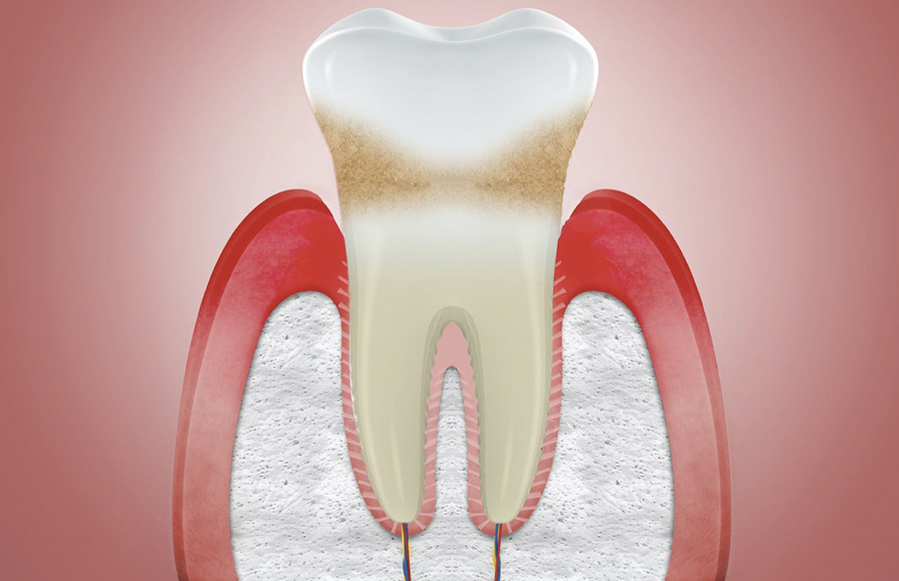
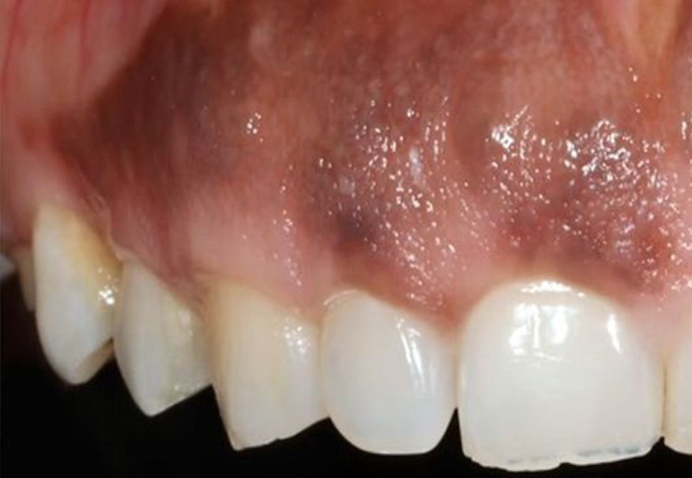
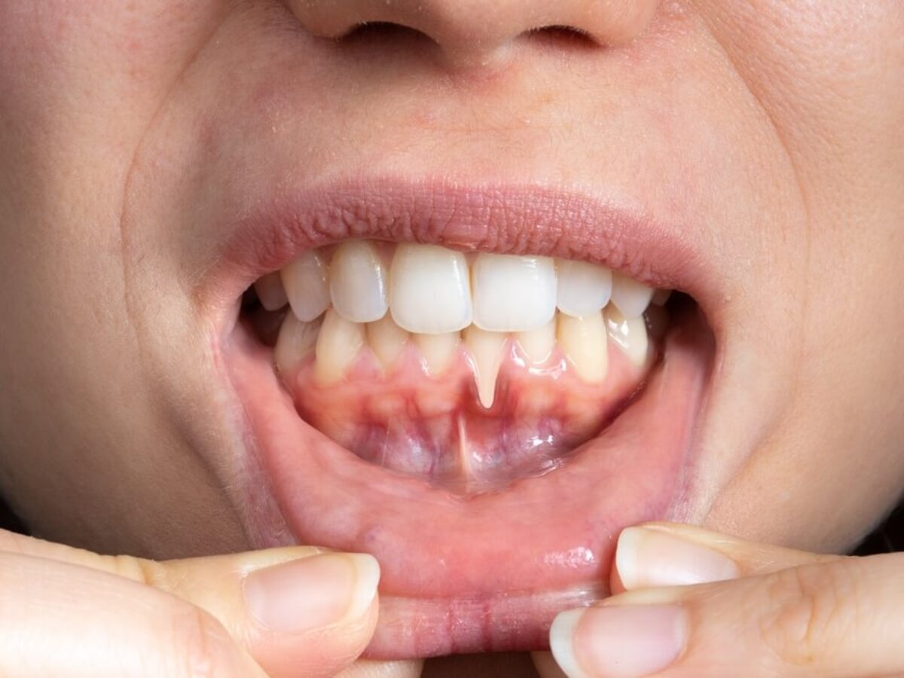
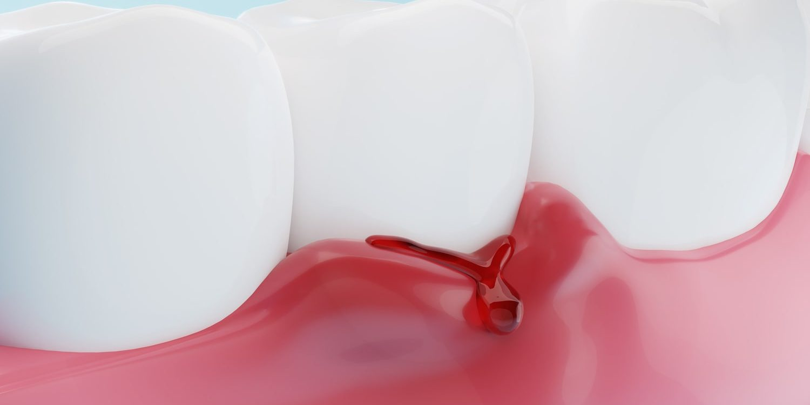
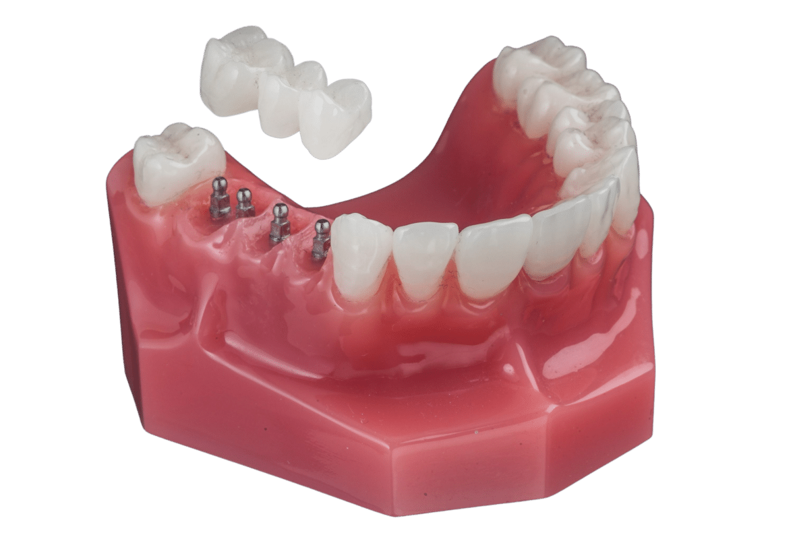
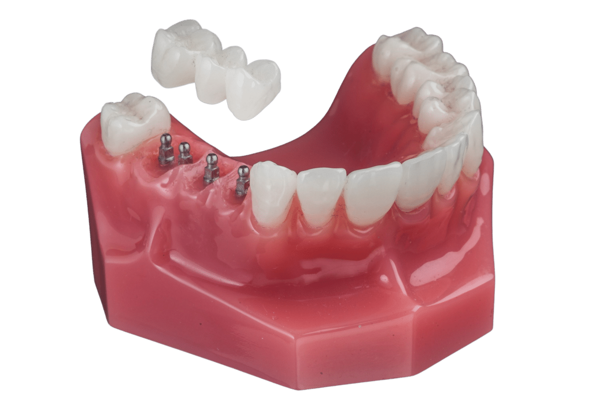

¿Qué es la gingivitis?
La gingivitis es una forma común y leve de enfermedad de las encías (enfermedad periodontal) que causa irritación, enrojecimiento e
hinchazón (inflamación) de la parte de las encías que rodea la base de los dientes. La gingivitis es
común, y es importante tratarla a tiempo, ya que puede llevar a formas más graves de enfermedad de las encías (periodontitis) y,
finalmente, a la pérdida de dientes.
Factores de riesgo
Las personas con mayor riesgo son aquellas que participan en deportes
de contacto sin protectores bucales, los niños pequeños, y las personas
con condiciones médicas que afectan la coordinación o el equilibrio.
Síntomas
Los síntomas de la gingivitis pueden ser leves, por lo que es posible que no te des cuenta de que tienes la afección.
Sin embargo, los signos y síntomas comunes de la gingivitis incluyen:

Encías inflamadas o hinchadas.

Encías de color rojo oscuro o violáceo.

Encías retraídas (las encías que se han separado de los dientes).

Encías que sangran fácilmente al cepillarte o usar hilo dental.
Causas
La causa más común de la gingivitis es la acumulación de placa bacteriana en los dientes. La placa es una película pegajosa e incolora
que se forma en los dientes cuando las bacterias en la boca interactúan con los alimentos y bebidas. Si no se elimina con el cepillado y
el uso de hilo dental, la placa puede endurecerse y convertirse en sarro, lo que irrita las encías y provoca gingivitis.
Tratamiento
El tratamiento para la gingivitis es sencillo si se detecta en una etapa temprana. Los pasos comunes incluyen:
- Limpieza profesional: Tu dentista o higienista dental eliminará toda la placa, el sarro y las bacterias de la boca.
- Instrucciones de higiene oral: Te enseñarán a mantener una buena rutina de limpieza en casa para evitar la reaparición de la enfermedad.
- Cuidado en el hogar: Mejorar tus hábitos de cepillado y uso de hilo dental es clave para revertir la gingivitis.
Si se siguen estas recomendaciones, la gingivitis suele desaparecer en unos días o semanas. En casos más avanzados, puede ser necesario un tratamiento más agresivo, como raspado y alisado radicular.

 
